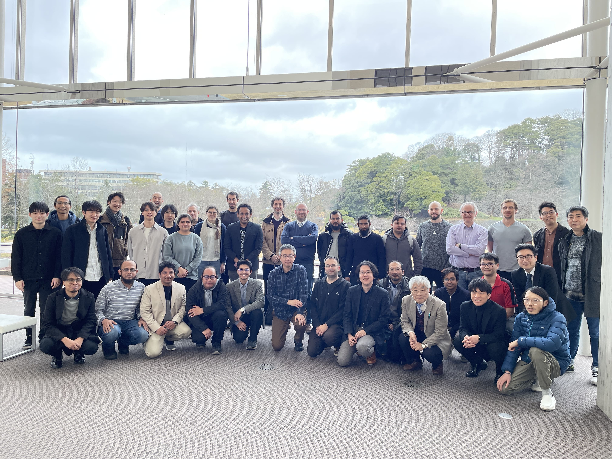
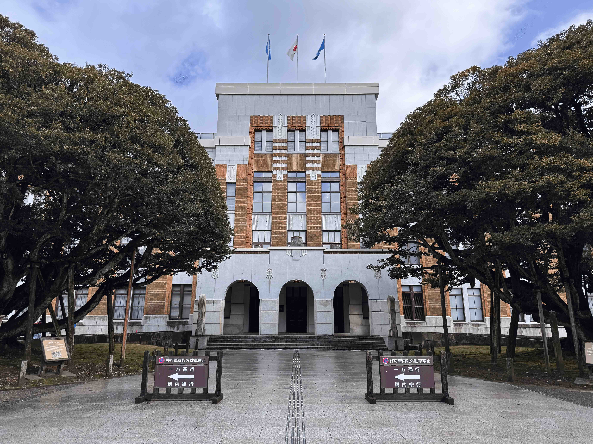
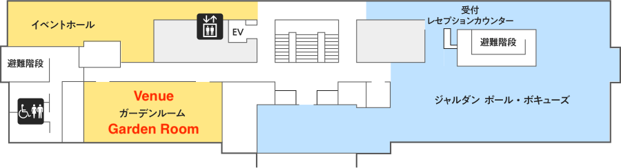
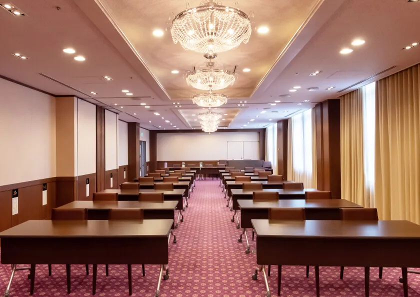

About MNANP2027
MNANP2027 is a workshop on the modeling and numerical analysis of nonlinear phenomena. It covers topics such as nonlinear partial differential equations, complex fluids and materials, viscoelasticity, and moving boundaries. The workshop focuses on mathematical modeling, numerical methods, and their applications in fields such as physics, biology, and engineering.
The workshop is organized in conjunction with CoMFoS27, which was initiated in 1995 under the auspices of the activity group “Continuum Mechanics Focusing on Singularities (CoMFoS)” of the Japan Society for Industrial and Applied Mathematics (JSIAM). From April 2010, the activity group CoMFoS was renamed “Mathematical Aspects of Continuum Mechanics (MACM)”. The links for recent CoMFoS meetings can be accessed here: CoMFoS2022, CoMFoS2023, CoMFoS2025, and CoMFoS2026.
Previous Meeting

Speakers
To be announced.
Workshop Booklet
Date and Venue
- Date: January 23–24, 2027 (Saturday and Sunday)
- Venue: Garden Room (ガーデンルーム), 2nd Floor
- Location: Shiinoki Cultural Complex (しいのき迎賓館), Ishikawa, Japan
- Address: 2-chōme-1-1 Hirosaka, Kanazawa City, Ishikawa Prefecture 920-0962 .
-



Access Information
From JR Kanazawa Station Bus Terminal:
- Kenrokuen Exit (East Exit): Bus Stops No. 3, 6, 7, 8, 9, 10, and 11
- Kanazawa Port Exit (West Exit): Bus Stop No. 5
Get off at “ Hirosaka, 21st Century Museum of Contemporary Art (広坂・２１世紀美術館) ” (about 12 minutes) and walk about 1 minute.
Organizing Committee
- Masato Kimura (Kanazawa University, JP)
- Hirofumi Notsu (Kanazawa University, JP)
- Julius Fergy Rabago (Kanazawa University, JP)
- Koya Sakakibara (Kanazawa University, JP)